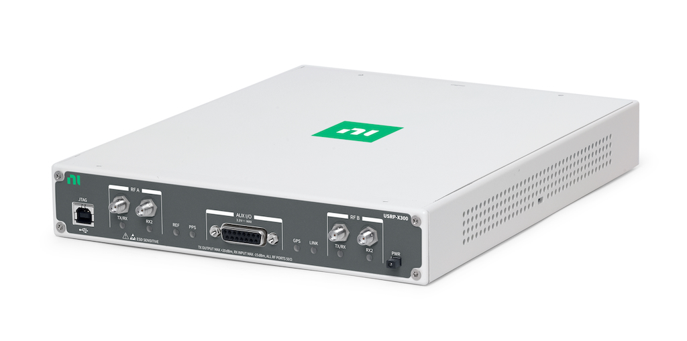
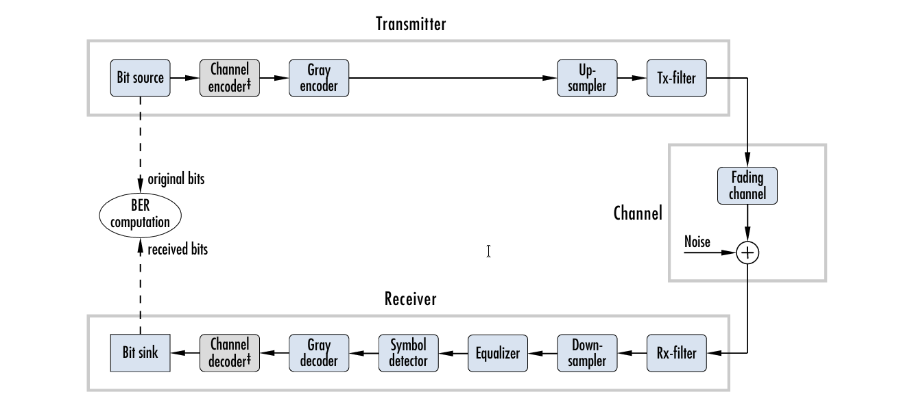
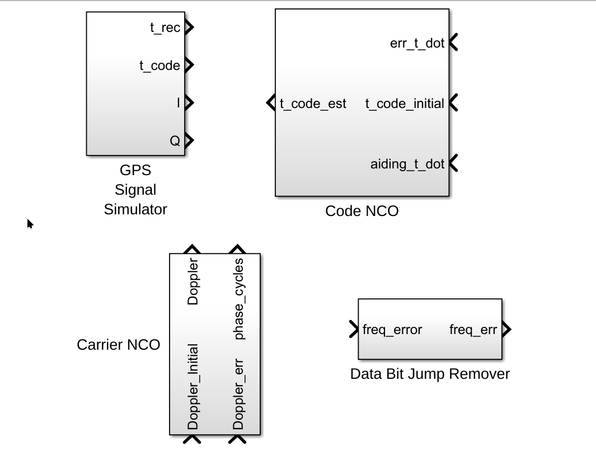
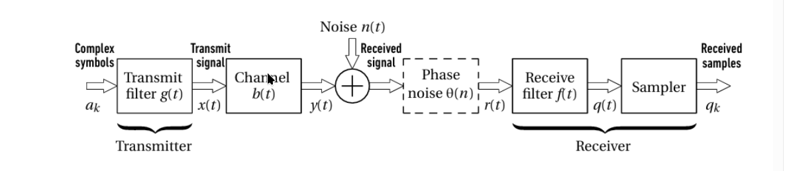
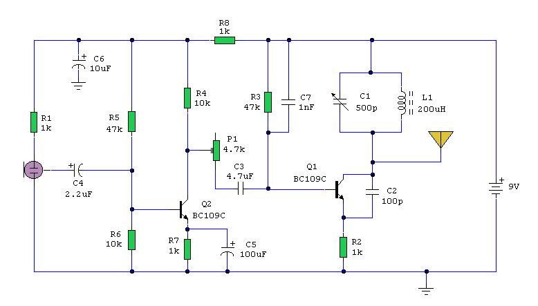
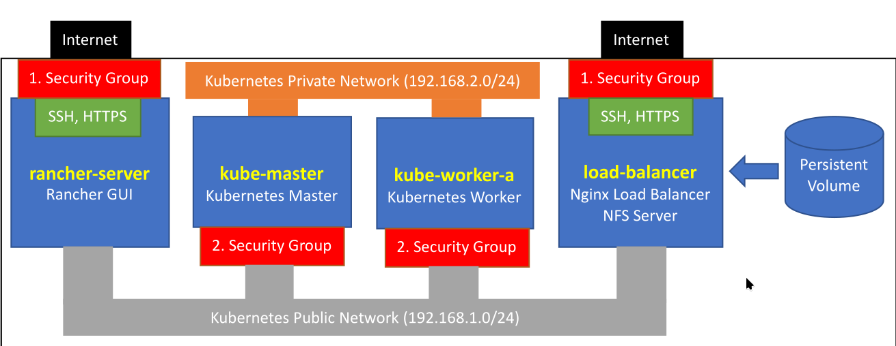
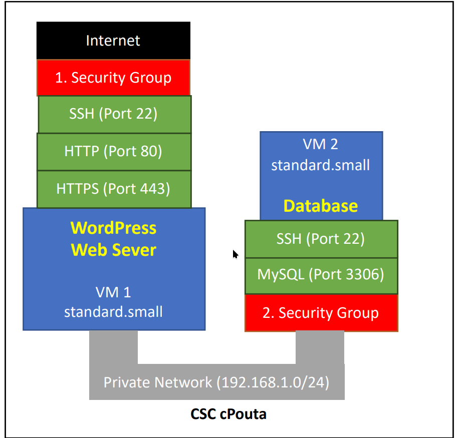
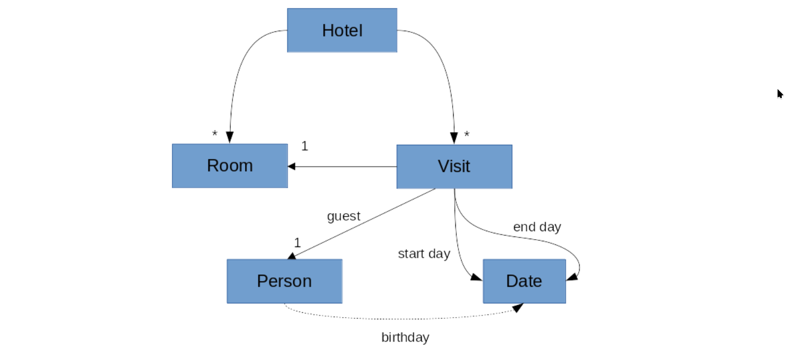
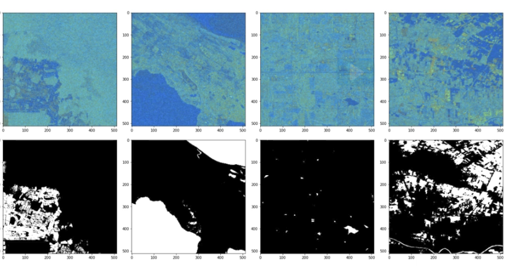

Software-Defined Radio Communication Chain
End-to-end SDR communication chain implemented using USRP and LabVIEW, focusing on real-time transmission, reception, and RF impairment analysis.

Digital Communication System Simulations
MATLAB-based simulations of QAM, PSK, and OFDM systems with BER analysis under AWGN and fading channels.

Software-Based GPS Receiver
Complete GPS receiver chain designed in Simulink, including signal acquisition, tracking loops, and navigation solution.

Single-Carrier M-QAM under Fading
Performance evaluation of single-carrier M-QAM systems under frequency-selective fading and phase noise impact on symbol detection

AM Transmitter Design
Design and implementation of an AM transmitter with emphasis on modulation theory, spectral analysis, and RF communication principles.

Kubernetes-Based Cloud Infrastructure for Scalable E-Commerce
Production-style Kubernetes infrastructure deployed on CSC cPouta, hosting a scalable EverShop e-commerce platform with PostgreSQL, persistent storage, and Nginx-based ingress and load balancing.

Cloud-Hosted WordPress Platform with Disaster Recovery
Production-style WordPress deployment on CSC cPouta with isolated web and database tiers, HTTPS, persistent storage, and full MySQL disaster recovery from backup.

Modular Hotel Management System
An object-oriented C++ application utilising smart pointers (shared_ptr) and STL containers to manage room allocations, guest visits, and historical data with robust memory safety.

Disaster Risk Monitoring Using Satellite Imagery
A deep learning pipeline developed in collaboration with UNOSAT to automate flood detection. Utilises transfer learning for semantic segmentation and hardware-accelerated tools to process large-scale satellite data for near real-time disaster response.